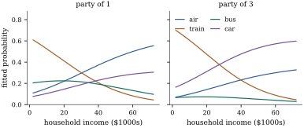

36.1 Baseline-category logits
Let the response of observation
36.1.1. The multinomial distribution is an exponential family
Chapter
34 was built on a one-dimensional exponential
dispersion family (Definition 34.1.1).
A categorical response is a vector with
Let
Then the probability mass function is
with
and the first two moments are
where
Proof. Since
For the moments, sum Eq. 36.1.1
over the support. By the multinomial theorem,
Remark (What is new and what is
not). Eq. 36.1.1 has
the shape of Definition 34.1.1
with the scalar natural parameter replaced by a vector
and the dispersion
36.1.2. The model
Let
with unknown
This is a generalized linear model in the sense of Definition 34.2.1,
with the multinomial random component of Lemma 36.1.1
and the canonical link, since Eq. 36.1.4
sets
36.1.3. The likelihood equations
Under Definition 36.1.1
the log-likelihood, as a function of
Then:
(a) the score has blocks
(b) the observed and expected information coincide and have blocks
(c)
Proof.
(a) Differentiate:
(b) Differentiating again, and using
(c) Take
Idea. The likelihood equations say
Because the information is the expected information,
Newton–Raphson and Fisher scoring are the same
algorithm, and by Theorem 34.4.1
each step is a weighted least squares fit, with block
weights
Warning (Existence). Concavity
guarantees uniqueness, not existence. As for binary
data, the maximum is attained unless the categories can
be separated. Take
36.1.4. Reading the coefficients
Two facts about Eq. 36.1.4 are easy to state and easy to misuse.
Let
(a) for every pair of categories
(b) refitting the model with baseline
(c) the estimated covariance matrix of
Proof.
(a) Subtract two instances of Eq. 36.1.4; the baseline cancels because
(b) The map
(c) Under a linear reparameterization
So the coefficients are log odds ratios:
In Definition 36.1.1,
with
So the
Proof. Write
Since
36.1.5. Travel mode choice
Two hundred and ten travellers on the
Sydney–Melbourne corridor each chose one of four modes:
air (58), train (63), bus (30) or car (59). The
regressors are the household income in units of $10,000
and the size of the travelling party. Take car as the
baseline. Fitting Definition 36.1.1
by Newton–Raphson from
| logit | intercept | income (per $10,000) | party size |
|---|---|---|---|
| air vs car | 0.9435 (0.5498) | 0.0354 (0.1030) | |
| train vs car | 2.4938 (0.5357) | ||
| bus vs car | 1.9780 (0.6717) |
Income does not distinguish air from car (
import numpy as np
import statsmodels.api as sm
MODES = ["air", "train", "bus", "car"] # car is category 4, the baseline
raw = sm.datasets.modechoice.load_pandas().data
chosen = raw[raw["choice"] == 1].sort_values("individual").reset_index(drop=True)
y = chosen["mode"].astype(int).to_numpy() # 1 air, 2 train, 3 bus, 4 car
n, c = len(y), 4
X = np.column_stack([np.ones(n), chosen["hinc"] / 10.0, chosen["psize"]])
Y = np.zeros((n, c))
Y[np.arange(n), y - 1] = 1.0 # indicator matrix, baseline last
print("chosen mode counts:", Y.sum(axis=0))The fit itself is Theorem 36.1.2 written out: build the probabilities, form the score and the block information, solve, repeat.
def probs(X, B):
"""Fitted probabilities of the baseline-category logit model; B is p x (c-1)."""
eta = np.column_stack([X @ B, np.zeros(len(X))]) # baseline has eta = 0
eta = eta - eta.max(axis=1, keepdims=True) # stabilize the exponentials
E = np.exp(eta)
return E / E.sum(axis=1, keepdims=True)
def loglik(X, Y, B):
return float(np.sum(Y * np.log(probs(X, B))))
def mnlogit(X, Y, tol=1e-10, maxit=50):
"""Newton-Raphson (= Fisher scoring, the link is canonical) for baseline logits."""
n, p = X.shape
c = Y.shape[1]
B = np.zeros((p, c - 1))
for it in range(1, maxit + 1):
P = probs(X, B)
U = (X.T @ (Y[:, :c - 1] - P[:, :c - 1])).T.ravel() # score, stacked by category
J = np.zeros(((c - 1) * p, (c - 1) * p)) # expected = observed information
for r in range(c - 1):
for s in range(c - 1):
w = P[:, r] * ((r == s) - P[:, s])
J[r * p:(r + 1) * p, s * p:(s + 1) * p] = X.T @ (w[:, None] * X)
step = np.linalg.solve(J, U)
B = B + step.reshape(c - 1, p).T
if np.max(np.abs(step)) < tol:
break
return B, J, it
B, J, iters = mnlogit(X, Y)
se = np.sqrt(np.diag(np.linalg.inv(J))).reshape(c - 1, X.shape[1]).T
for r in range(c - 1):
print(f"{MODES[r]:>6s} vs car: " + " ".join(f"{b:7.4f} ({s:.4f})" for b, s in zip(B[:, r], se[:, r])))
print(f"log-likelihood {loglik(X, Y, B):.4f} after {iters} Newton steps")The script behind this section checks the output
against the MNLogit routine of statsmodels,
coefficient by coefficient. It also carries out the
substitution of Proposition 36.1.3,
refitting with train as the baseline and confirming that
subtracting the train column from the fitted coefficient
matrix reproduces the refit and leaves every fitted
probability unchanged.
# changing the baseline: subtract the train column (category 2) from every column
Btrain = B - B[:, [1]]
Btrain = np.delete(np.column_stack([Btrain, -B[:, 1]]), 1, axis=1) # drop train, add car
Ytrain = Y[:, [0, 2, 3, 1]] # put train last
Bcheck, _, _ = mnlogit(X, Ytrain)
print("air vs train, refitted :", np.round(Bcheck[:, 0], 6))
print("air vs train, subtracted:", np.round(Btrain[:, 0], 6))
print("fitted probabilities identical:", np.allclose(probs(X, Bcheck)[:, [0, 3, 1, 2]], probs(X, B)))Figure
36.1.1 plots the fitted probabilities against
income, and the bus curve in the left panel is Proposition 36.1.4
made visible: the coefficient of income in the bus logit
is

# the derivative of a fitted probability is not the coefficient
Bfull = np.column_stack([B, np.zeros(X.shape[1])]) # append the baseline's column of zeros
x0 = np.array([1.0, 1.0, 1.0]) # income $10,000, party of one
p0 = probs(x0[None, :], B)[0]
dp0 = p0 * (Bfull[1] - p0 @ Bfull[1]) # d pi_r / d (income in $10,000s)
print("fitted probabilities", np.round(p0, 4))
print("derivatives ", np.round(dp0, 4))
print("income coefficients ", np.round(Bfull[1], 4))Remark (Fitting one logit at a
time). It is tempting to estimate
36.1.6. Inference
The argument of Theorem 34.5.1 carries over verbatim in block notation, although the theorem there is stated for a scalar response: by Theorem 36.1.2 the score is again a sum of independent mean-zero vectors, the information is again nonrandom, and the global concavity its proof leans on is Theorem 36.1.2(c). Under the analogues of its conditions — categories and regressors fixed, sample size growing, the leverages of the stacked design tending to zero, the true parameter interior — the maximum likelihood estimate is consistent and asymptotically normal with covariance the inverse information; nested models are compared by the analysis of deviance of Theorem 34.5.5.
Two cautions are specific to categorical responses.
The deviance is not a goodness-of-fit statistic
for ungrouped data: when every
36.1.7. Exercises
A. Check your understanding
A response has
Solution. The model has
B. Practice
From the fitted coefficients of Example (Choosing how to travel), compute the estimated log odds ratio of bus against train per $10,000 of income, and the estimated odds ratio of air against bus per extra person in the party. State which of these depend on the choice of baseline.
Solution. By Proposition 36.1.3
the bus-against-train income coefficient is
Show directly that the
Solution. For any
C. Going deeper
The adjacent-category logit model
for an ordered response specifies
Solution. Summing the adjacent
logits from
Show that in Definition 36.1.1
the ratio